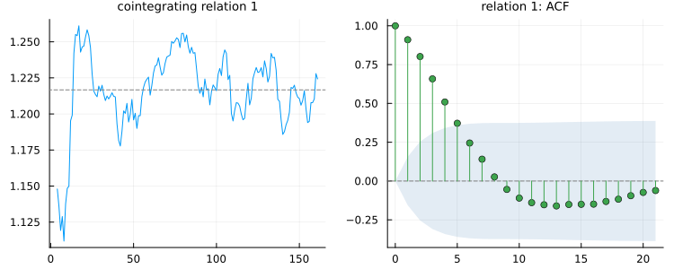

API: Cointegration and VECM
The estimated cointegrating relation between log GNP and log consumption in econ5, with its autocorrelation — the display that shows whether an "equilibrium" actually behaves like one, and one no Python library draws. The worked explanation is in Manual: Cointegration and VECM.
using TSAnalytics, Plots
e = dataset("econ5")
Y = (gnp = log.(e.gnp), consum = log.(e.consum))
plot(cointegration_plot(fit_vecm(Y; lags = 2, rank = 1)); size = (750, 300))
Residual-based tests
TSAnalytics.coint_test — Function
coint_test(Y; trend=:const, lags=nothing, autolag=:aic) -> CointTestThe Engle-Granger (1987) two-step test of the null of no cointegration: regress the first column of Y on the others (and the deterministic terms), then run an augmented Dickey-Fuller test with no deterministic terms on that regression's residual. A residual with no unit root means some linear combination of the series is stationary.
The statistic is not symmetric in the ordering of the columns — swapping them gives a different number, and can give a different conclusion. Put the variable you would normalize the cointegrating relation on first.
trend sets the deterministic terms of the cointegrating regression: :none, :const (default), :trend (constant and linear trend) or :quadratic (constant, trend and trend²) — statsmodels' "n", "c", "ct", "ctt". (Unlike fit_var's deterministic, :trend here includes the constant; a trend without one is not a case MacKinnon tabulates.)
Lags: pass them explicitly to reproduce a reference
lags is the ADF regression's lag order — a maximum when autolag is :aic, :bic or :tstat, the exact order when autolag = nothing. The default is adf_test's own Schwert rule, ⌈12 (n/100)^{1/4}⌉, and the selection is adf_test's, so the package has one lag-selection implementation rather than two.
[V] At a fixed lag the statistic is unambiguous: statsmodels' coint and an Engle-Granger built by hand from R's lm and urca::ur.df agree to 1.8e-15. With each selecting its own lag they land on different orders on three of four fixtures — coint3_r1 gives −9.57 in R and −12.27 in Python. The test is not what they disagree about; the search is. An autolag-selected statistic will therefore not in general match either reference, and an explicit lags with autolag = nothing reproduces both.
Tables, and what is refused
p-values are MacKinnon's (1994) response surfaces, which cover N ≤ 6 series; critical values are MacKinnon (2010) at sample size n − 1, covering N ≤ 12 — both transcribed from statsmodels (BSD) and checked against urca's independent 1995-vintage tables, which agree to about 5e-4 on critical values and 2e-2 on p-values.
Nbetween 7 and 12: the critical values are returned andpvaluethrows, naming them.N > 12: refused — nothing is tabulated.trend = :none: refused. MacKinnon's no-constant critical values are for a single series only.[V]statsmodelsreturns a p-value withNaNcritical values beside it here; no field of this result is everNaN.- A single series: refused, naming
adf_test.[V]statsmodelssilently turns that into a plain ADF test and reportsN = 1critical values, which is not a cointegration test.
julia> using TSAnalytics, DelimitedFiles
julia> Y = readdlm(joinpath(dirname(pathof(TSAnalytics)), "..", "test",
"fixtures", "var", "coint2_yes.csv"), ','; skipstart=1);
julia> t = coint_test(Y; lags=4, autolag=nothing);
julia> round(t.statistic; digits=6), t.lags
(-5.278984, 4)
julia> t.critical_values.levels
(1.0, 5.0, 10.0)
julia> pvalue(t) < 0.001
trueSee also adf_test, critical_values.
TSAnalytics.CointTest — Type
CointTest <: HypothesisTestThe Engle-Granger cointegration test returned by coint_test.
statistic: the ADFtstatistic on the cointegrating residual.pvalue: the MacKinnon response-surface p-value, ornothingwhen the tables do not cover the case — thenpvalue(t)throws, namingcritical_values.pvalue_availablesays which.critical_values:(levels = (1.0, 5.0, 10.0), values = (…)).N(number of series),trend,lags(the lag actually used),autolag,nobs(series length).beta: the cointegrating regression's coefficients, deterministic terms first —[const, x₂, …]fortrend = :const;resid: the residual the ADF regression ran on.
TSAnalytics.phillips_ouliaris_test — Function
phillips_ouliaris_test(Y; kind=:Pz, deterministic=:const, bandwidth=:short)
-> PhillipsOuliarisTestThe Phillips & Ouliaris (1990) residual-based tests of the null of no cointegration among the columns of Y (2 to 6 series):
kind = :Pu— the variance ratio (their (12)):T ω̂₁₁.₂ / (T⁻¹ Σ û²), the long-run conditional variance of the first series given the others against the residual variance of the cointegrating regression. Likecoint_testit depends on which series is first.kind = :Pz— the multivariate trace statistic (their (14)):T tr(Ω̂ M_zz⁻¹), invariant to the normalization — no series is singled out. That is why it is the default.
Both are right-tailed: a large value rejects. Ω̂ is the Bartlett- weighted long-run covariance of the residuals of a first-order VAR in the levels, with bandwidth lags: :short is ⌊4 (T/100)^{1/4}⌋ and :long ⌊12 (T/100)^{1/4}⌋, with T = n − 1 (5 and 15 at n = 250) — urca's rules — or an integer; 0 gives the uncorrected statistic.
deterministic is not a detail
:none, :const or :trend (constant and trend) — urca's demean = "none" | "constant" | "trend", the paper's "standard", "demeaned" and "demeaned and detrended". The choice changes the answer qualitatively: [V] on coint2_trend.csv, whose cointegrating relation contains a trend, Pu is 3.19 with :none (no rejection at 10%), 50.24 with :const (rejects at 5%) and 170.0 with :trend (rejects at 1%). The default is :const; choose deliberately.
Pz with a deterministic term follows the paper, not urca
With a constant or trend, Phillips & Ouliaris build M_zz from the demeaned (or detrended) data (§3, remark (f)), which is what their Tables IVb and IVc were simulated under. [V] urca::ca.po uses the raw z'z there. The consequence is not cosmetic: urca's statistic is not invariant to adding a constant to the data (71.86 becomes 38.84 on coint2_yes.csv after adding 1000 to both series), and in 4000 simulations of independent random walks at n = 500 it rejected 0.25% of the time at the nominal 5% with a constant and 0% with a trend, against 4.3% and 4.2% for the paper's statistic. Pu, and Pz with :none, agree with urca to 1e-10.
No p-value
The paper tabulates quantiles only, at seven sizes from 15% to 1%; critical_values reports the 10%, 5% and 1% points and reject compares against them. pvalue(t) throws. [V] tseries::po.test reports 0.01 or 0.15 — the bounds of its table — as though they were p-values; nothing here is censored that way.
m > 6 is refused: the tables stop at five regressors.
julia> using TSAnalytics, DelimitedFiles
julia> Y = readdlm(joinpath(dirname(pathof(TSAnalytics)), "..", "test",
"fixtures", "var", "coint2_yes.csv"), ','; skipstart=1);
julia> t = phillips_ouliaris_test(Y; kind=:Pu, deterministic=:const);
julia> round(t.statistic; digits=6), t.bandwidth
(143.609807, 5)
julia> t.critical_values
(levels = (10.0, 5.0, 1.0), values = (27.8536, 33.713, 48.0021))
julia> reject(t; level=1.0)
trueSee also coint_test, reject.
TSAnalytics.PhillipsOuliarisTest — Type
PhillipsOuliarisTest <: HypothesisTestA Phillips-Ouliaris residual-based cointegration test, returned by phillips_ouliaris_test. kind is :Pu or :Pz; m the number of series; bandwidth the Bartlett lag used for the long-run covariance. critical_values is (levels = (10.0, 5.0, 1.0), values) — ascending, since this is a right-tail test, the opposite of the MacKinnon tables' order; use reject rather than indexing by position. There is no p-value: pvalue(t) throws.
TSAnalytics.reject — Function
reject(t; level=5.0) -> BoolWhether a test reported with critical values rejects its null at level percent, comparing in the test's own direction — left tail for coint_test (a statistic below the critical value rejects), right tail for phillips_ouliaris_test (above). level must be one of the levels in critical_values(t); it is matched by value, never by position, because the two families order their levels oppositely.
julia> using TSAnalytics, DelimitedFiles
julia> Y = readdlm(joinpath(dirname(pathof(TSAnalytics)), "..", "test",
"fixtures", "var", "coint2_no.csv"), ','; skipstart=1);
julia> reject(phillips_ouliaris_test(Y); level=10.0) # independent random walks
falseTSAnalytics.critical_values — Function
critical_values(t::HypothesisTest) -> Union{Nothing, NamedTuple}The critical values a test reports, as a NamedTuple whose levels field names the significance levels (in percent) explicitly — different tests order them differently (MacKinnon's tables run 1%, 5%, 10%; Phillips-Ouliaris and Johansen run 10%, 5%, 1%), so position is never load-bearing. nothing for a test that reports none.
Johansen
TSAnalytics.johansen_test — Function
johansen_test(Y; lags, deterministic=:const) -> JohansenTestJohansen's likelihood-ratio tests for the cointegration rank of the K series in Y: the trace statistic −T Σ_{i>r} log(1 − λᵢ) for H₀: rank ≤ r against rank ≤ K, and the maximum-eigenvalue statistic −T log(1 − λ_{r+1}) against rank = r + 1, for r = 0 … K−1, with λ the eigenvalues of the reduced-rank regression (see _johansen_rrr). [V] With the mappings below, urca::ca.jo and statsmodels' coint_johansen agree with each other and with this to ≤ 2.2e-11.
lags is required, and counts differenced lags — statsmodels' k_ar_diff. urca's K is lags + 1 (it counts the levels VAR's order). lags = 0 is refused: [V] statsmodels silently accepts it.
deterministic: five cases, one shared between the references
deterministic | meaning | urca ecdet | statsmodels det_order | Osterwald-Lenum |
|---|---|---|---|---|
:none | no deterministic term | — | -1 | Table 0 |
:const | unrestricted constant (a drift in the data) | "none" | 0 | Table 1 |
:const_restricted | constant only inside the cointegrating relation | "const" | — | Table 1* |
:trend | unrestricted constant and trend | — | — | Table 2 |
:trend_restricted | unrestricted constant, trend inside the relation | "trend" | — | Table 2* |
:const is the common default and is urca's ecdet = "none" despite the name: "none" there means no deterministic term inside the cointegrating relation, and an unrestricted constant is still fitted. A restricted term adds a row to β and an eigenvalue that is zero by construction; it is dropped from the test sequence. statsmodels' det_order = 1 detrends the data rather than fitting this package's :trend model, so the two are not compared.
Critical values: Osterwald-Lenum (1992), and which table
Each case uses the Osterwald-Lenum table its own decision table assigns (p. 466). Two consequences worth knowing:
:constuses Table 1, so it agrees withstatsmodels' values, noturca's.urca'secdet = "none"values (5% trace forp − r = 1, 2, 3:8.18, 17.95, 31.52) are Osterwald-Lenum'sTable 1.1*, the case where the model has an unrestricted constant but the data's constant lies in the cointegrating space only — a table the paper itself calls superfluous under Johansen's (1992) testing procedure. Table 1's3.76, 15.41, 29.68is the matching case, andstatsmodels' independently simulated3.84, 15.49, 29.80agrees with it.- The smallest-block value near
3.84under:constand:trendis the asymptotic theory, not a defect: the last block is χ²(1)-like in exactly those cases.
The paper tabulates p − r ≤ 11, so K ≤ 11; more is refused, never answered with NaN — [V] which statsmodels does silently for 13 series and for det_order = 2.
No p-value
pvalue(t) throws, naming critical_values and coint_rank. MacKinnon-Haug-Michelis (1999) response surfaces would give real p-values — something neither reference has — but they are a separate, paper-sourced task, and interpolating three tabulated quantiles into a pseudo-p-value is not done.
urca's spec = "transitory" reparameterizes the short-run part only; the eigenvalues and statistics are identical ([V] to 5e-12), so it is not a separate option here.
julia> using TSAnalytics, DelimitedFiles
julia> Y = readdlm(joinpath(dirname(pathof(TSAnalytics)), "..", "test",
"fixtures", "var", "coint3_r1.csv"), ','; skipstart=1);
julia> t = johansen_test(Y; lags=1);
julia> round.(t.trace; digits=4)
3-element Vector{Float64}:
90.8401
4.4815
0.4595
julia> t.trace_crit[:, 2] # 5% points, r = 0 first
3-element Vector{Float64}:
29.68
15.41
3.76
julia> coint_rank(t)
1See also coint_rank, normalize_beta, coint_test.
TSAnalytics.JohansenTest — Type
JohansenTest <: HypothesisTestThe Johansen cointegration rank tests returned by johansen_test. Everything is ordered r = 0 first, with the rank of each row in ranks so position is never load-bearing.
trace,maxeig: the statistics forH₀: rank ≤ ragainstrank ≤ Kand againstrank = r + 1.trace_crit,maxeig_crit:K × 3, columns the 10%, 5% and 1% points of Osterwald-Lenum (1992) for the matching deterministic case.eigenvalues:Kof them, real and in[0, 1)by construction.beta: the eigenvectors,K₁ × KwithK₁ = K + 1when a deterministic term is restricted to the cointegrating space (its coefficient is the last row); normalizedβ'S₁₁β = I, sign fixed so the first element is positive. Usenormalize_betafor a conventional form.alpha: the matching adjustment coefficientsS₀₁β, so thatalpha[:, 1:r] * beta[:, 1:r]'is the rank-rimpact matrix.lagscounts differenced lags (statsmodels'k_ar_diff;urca'sKislags + 1);nobsis the effective sample.
TSAnalytics.coint_rank — Function
coint_rank(t::JohansenTest; statistic=:trace, level=5.0) -> IntThe cointegration rank chosen by Johansen's sequential procedure: test r = 0, 1, … in turn and stop at the first r the statistic does not reject at level percent (10, 5 or 1). If every hypothesis is rejected the rank is K — the levels are stationary.
julia> using TSAnalytics, DelimitedFiles
julia> Y = readdlm(joinpath(dirname(pathof(TSAnalytics)), "..", "test",
"fixtures", "var", "coint3_r2.csv"), ','; skipstart=1);
julia> coint_rank(johansen_test(Y; lags=1)) # one common trend, three series
2TSAnalytics.normalize_beta — Function
normalize_beta(t, r; scheme=:first_unit) -> Matrix{Float64}The first r cointegrating vectors in a conventional normalization:
:first_unit— each column divided by its first element, so the first row is all ones. This isurca::ca.jo'sV.:identity— the leadingr × rblock made the identity,β_r (β_r[1:r, :])⁻¹. This isurca::cajorls'sβ, and what most applied work reports forr > 1.
The two coincide at r = 1. The test statistics do not depend on the normalization; β does — [V] the references differ on it (statsmodels' evec is not normalized at all, and cajorls switches scheme with the rank), which is not a disagreement about the estimate. Beyond the first relation the vectors are only identified up to a rotation, so an over-specified r still returns numbers; they mean nothing more than the rank you asserted.
normalize_beta(m::VECMModel, r=m.rank; scheme=:first_unit) -> Matrix{Float64}The fitted cointegrating vectors in a conventional normalization; see the JohansenTest method, which shares the implementation, so a Johansen test and a VECM with the same deterministic give the same normalized β.
A VECM stores β with an identity block (statsmodels' and cajorls' form). At rank 1 both schemes coincide. At rank 2 or more the :first_unit scheme is a property of the eigenvector basis that johansen_test returns, not of the cointegrating space, and the identity-normalized columns can lead with zero; it is refused here rather than divided by zero — use :identity, which agrees with the Johansen test at every rank.
VECM
TSAnalytics.fit_vecm — Function
fit_vecm(Y; lags, rank, deterministic=:const, method=:ml) -> VECMModelFit a vector error-correction model of cointegration rank rank with lags differenced lags (statsmodels' k_ar_diff; urca's K is lags + 1).
deterministic is johansen_test's five-value vocabulary, with the same meanings, so a rank chosen there and a model fitted here cannot silently refer to different specifications:
deterministic | statsmodels | urca |
|---|---|---|
:none | "n" | — |
:const | "co" (constant outside the relation) | ecdet = "none" + cajorls |
:const_restricted | "ci" (constant inside) | ecdet = "const" |
:trend | "colo" | — |
:trend_restricted | "coli" | ecdet = "trend" |
[V] "co" and "ci" are close — on coint2_yes, β₂ is −0.6673249 against −0.6673217 and the log-likelihoods differ by 0.022 — and they are different models.
Two estimators
method = :ml(default): Johansen's reduced-rank maximum likelihood —βfrom the same eigenproblem asjohansen_test, thenα,Γand the deterministic terms by least squares givenβ. This is what all three references compute by default and what the Johansen rank test assumes.[V]urca::cajorls,statsmodels'VECMandtsDyn::VECM(estim = "ML")agree onβto≤ 1e-14.method = :twostep: Engle & Granger's two-step estimator —βfrom a static least-squares regression of the first series on the others (with any restricted deterministic term), then the error-correction regression. Consistent but not efficient, and a genuinely different estimate ([V]β = (1, −0.4931, −0.9655)against ML's(1, −0.4965, −0.9777)oncoint3_r1); it matchestsDyn::VECM(estim = "2OLS"). Rank 1 only —[V]tsDynwarns and silently switches to ML when asked for more; this refuses instead.
Refusals
rank must be in 1 … K−1: rank 0 is a VAR in differences and rank K a stationary VAR in levels, and neither is a VECM. [V] statsmodels accepts both (returning an empty β for 0 and the identity for K), and also accepts k_ar_diff = 0, which is refused here too.
julia> using TSAnalytics, DelimitedFiles
julia> Y = readdlm(joinpath(dirname(pathof(TSAnalytics)), "..", "test",
"fixtures", "var", "coint3_r1.csv"), ','; skipstart=1);
julia> m = fit_vecm(Y; lags=1, rank=1);
julia> round.(vec(m.beta); digits=6)
3-element Vector{Float64}:
1.0
-0.496505
-0.97773
julia> round.(vec(m.alpha); digits=6)
3-element Vector{Float64}:
0.036929
-0.234278
0.960762See also johansen_test, var_rep, forecast.
TSAnalytics.VECMModel — Type
VECMModel <: TimeSeriesModelA fitted vector error-correction model, returned by fit_vecm:
ΔY_t = α β' Ỹ_{t-1} + Γ_1 ΔY_{t-1} + … + Γ_k ΔY_{t-k} + (unrestricted deterministic) + u_twith Ỹ_{t-1} the lagged levels, augmented by a deterministic term when one is restricted to the cointegrating space.
alpha(K × r),beta(K₁ × r,K₁ = K + 1when a term is restricted; its coefficient is the last row).betais stored with its leadingr × rblock the identity —statsmodels' andcajorls' normalization — andalphamatches it, soalpha * beta'is the impact matrix.normalize_betagives other forms.gamma:lagsmatrices, eachK × K;det_coef:K × nfor the unrestricted deterministic terms (constant, then trend).sigma_df(divisorT − q,qregressors per equation) andsigma_mle(divisorT).stderr_alpha,stderr_gamma(K × K·lags),stderr_det: from the regression givenβ, with the MLΣ, asstatsmodelscomputes them.stderr_beta: Lütkepohl's (2005, Prop. 7.6) asymptotic standard errors of the free elements ofβ, zero on the normalized block;nothingformethod = :twostep, whose static regression gives none that are valid.resid(T × K),loglik,nobs(T),lags(differenced lags),rank,deterministic,method.
TSAnalytics.var_rep — Function
var_rep(m::VECMModel) -> Vector{Matrix{Float64}}The VECM written as a VAR in levels, lags + 1 coefficient matrices:
A₁ = I + α β' + Γ₁, A_j = Γ_j − Γ_{j−1} (j = 2 … lags), A_{lags+1} = −Γ_lags(β' restricted to its first K rows; a restricted deterministic term moves into the VAR's intercept or trend). This is what forecast and irf use — the VAR recursions of Stages 10.1 and 10.3, not a second implementation — and the test suite checks that the levels VAR reproduces the VECM's own residuals exactly.
[V] Matches vars::vec2var and statsmodels' var_rep.
The levels VAR has K − r unit roots by construction — that is what cointegration means — so it is not stable, and its long-run effects do not exist: lr_effects refuses a VECMModel.